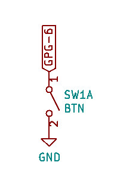
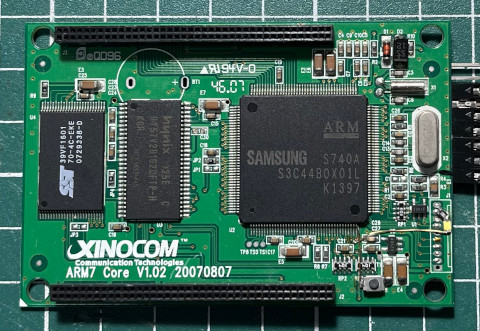
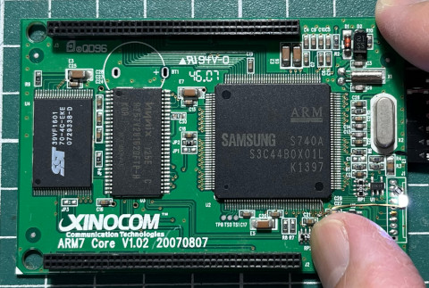

按鍵連接到GPG-6


.equiv PCONG, 0x1d20040
.equiv PDATG, 0x1d20044
.text
.global _start
_start: b reset
_undef: b .
_swi: b .
_pabort: b .
_dabort: b .
_reserved: b .
_irq: b .
_fiq: b .
reset:
ldr r0, =PCONG
ldr r1, =(1 << 10)
str r1, [r0]
ldr r0, =PDATG
0:
ldr r1, [r0]
lsr r1, #1
str r1, [r0]
b 0b
.end
完成

